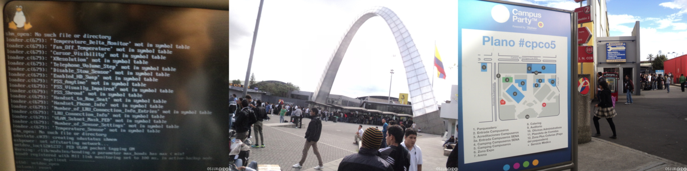
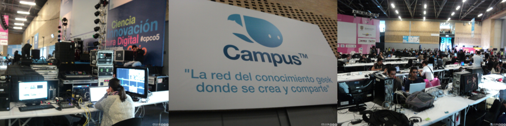
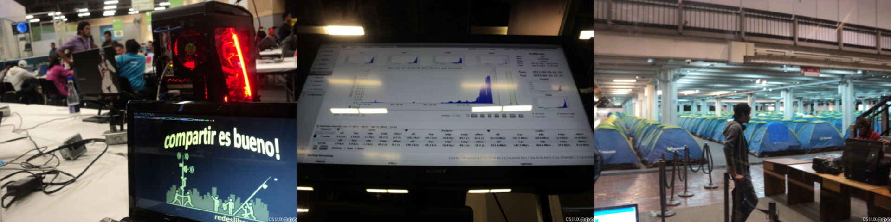
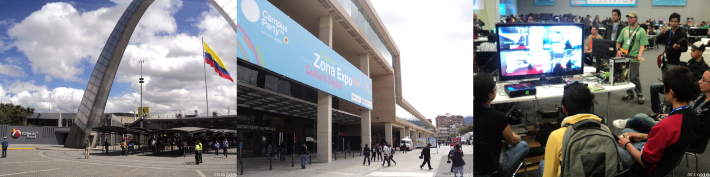
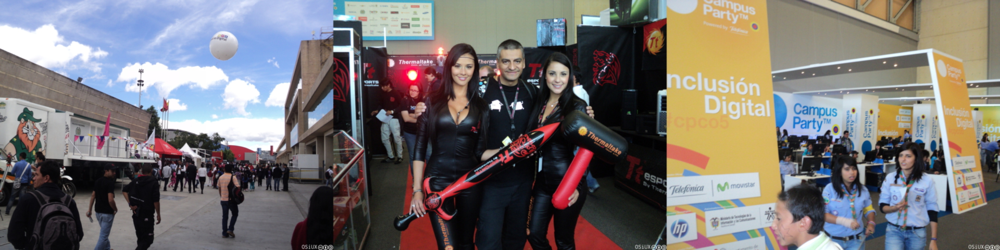
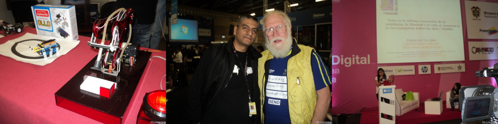
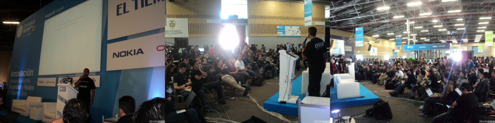

CampusParty Bogotá CPCO5
ABSOLUTELLY NO WARRANTY | CC-BY-SA | OSiUX | .git
la previa
El viaje comenzó bien, logré capturar el booteo del sistema de entretenimiento del avión, el cual usa Linux. Al llegar a Corferias, había una cola enorme intentando registrarse y no quedaban dudas de que el evento era muy grande!

El datacenter llamado cerebro estaba en medio de la arena.
Hice el reconocimiento del lugar.

Encontré un canal de televisión que transmite desde el evento y unos auditorios abiertos muy cómodos.
Ni bien ubiqué un lugar para conectarme y dar aviso que de estaba todo bien, recorrí el camping y pude ver que el tráfico de red comenzaba a aumentar y esto era la previa.

el primer día de charlas
El público aumentó considerablemente y había un clima de juegos.

Aparecieron las clásicas promotoras y los stands dentro y fuera de la arena.

Encontré robots y amigos.

no seas un terminal de internet, creá una red libre
A las 16hs di una conferencia donde comenté las ventajas de las redes libres y la interconexión con internet ante un público que se animó a preguntar bastante!

video

continuará…
Mañana sigue la movida e intentaré descubir la noche del CampusParty ya que es un evento 24hs